Cutscene Editor
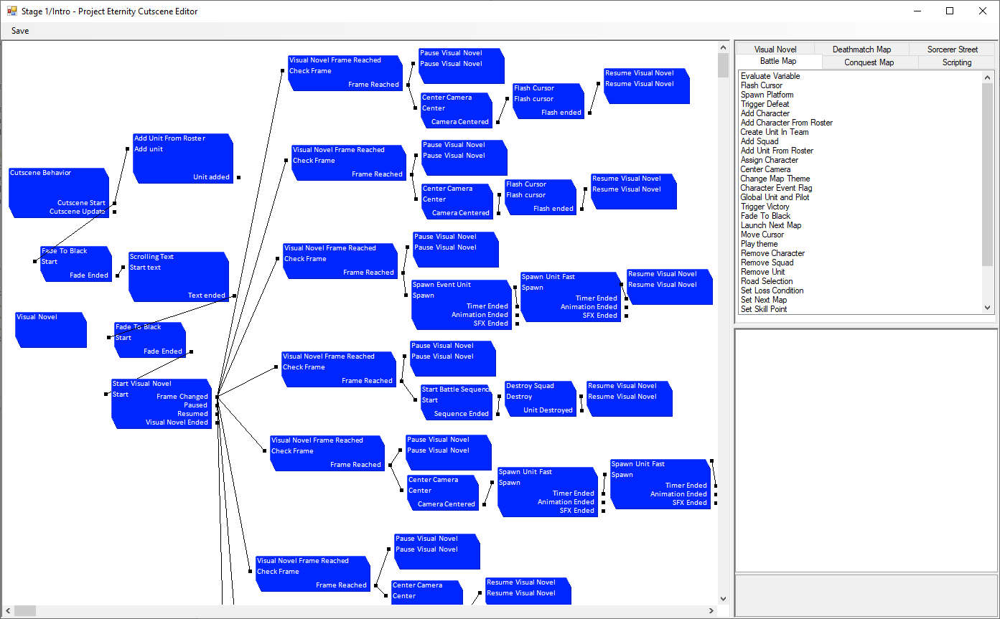
Because of how many different type of scripts there are we’ll go through them in order of importance to make a SRW game. As a side note, the Battle Map tab is for scripts shared between grid based mods but since we’re using only Deathamatch maps, there is essentially no difference between them for this tutorial, they just complete each other. On the bottom right is the attributes of the currently selected script and it is how you can tweak them to do what you want. Keep in mind that as long as a cutscene is playing the player won’t be able to control the game.
Spawn Unit Cutscenes
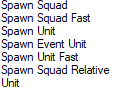

Let’s start simple and spawn a unit. Spawn scripts are under the Deathmatch tabs and as you can see, there are a lot of them.
There’s a few variants, if there’s Squad in the name it means you can spawn wingmans. If there’s Fast in the name, it means you can spawn the unit directly. If there’s no Fast in the name, you need to create a Unit script and then spawn it by referring to its ID. Finally Event units and units spawned from your roster but you first need to made those units available.
On the right you have events from the spawn that allow you to link events together. Here’s an example for spawning a unit, waiting until the timer set in the spawn script has finish and then spawn another unit.
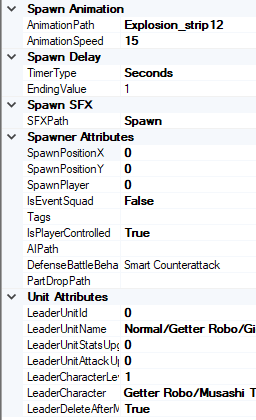
Let’s look a the attributes of the Spawn Unit Fast.
Spawn animation: Pick a gif like sprite animation and then set how many frame per seconds the animation should have.
Spawn Delay: This is the Timer event. It wait however long you want before starting the next event.
Spawn SFX: Play a sound when spawning.
Spawn attributes: Set the position where the unit will spawn and the player. 0 is for player you control, 1 is for the enemy. You can have more players by using another scripts.
IsEventSquad: will make the unit stay visible even if destroyed, which is useful for bosses giving a final speech on death.
Tags: let you add many various tags on the unit that can be used for filtering in other scripts. This way you can define multiple groups of enemies so you can check when they all are dead and start another cutscene.
IsPlayerControlled: Only relevant for human players. If set to false it means the player won’t be able to control this unit, it will instead play on its own at the start of the player phase. Requires an AI.
AIPath: Pick an AI for the unit, only relevant for enemies. It decide how it will move and who it will attack. It also decide if the unit will use spirits or not. You can make your own with the AI editor but just pick SRWE Enemy AI to keep it simple.
DefenseBattleBehavior: Secondary AI, it decide which behavior to use when it is attacked. Smart means it will counterattack if the attack it sustain won’t kill it, it will defend if it would and it will evade if even defending would kill it. You can also set it to always counterattack for bosses that are supposed to be berserk.
Part Drop: Drop a unit part on death. Those parts are under the Unit node of the editor if you want to create more.
Unit attributes: It is recommend to use an ID that’s not in use but not necessary. You can easily split ID with rule like anything under 100 is ally and everything over 100 is enemy. For the rest just pick a unit and a pilot, give upgrades and levels as wished.
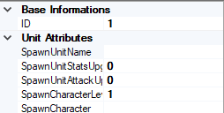
If you want to spawn a unit using the non fast method, you need to create a Unit script which will hold the same information. However this one require a unique ID inside of the cutscene, you can reuse ID between different cutscenes if wanted.
You set the ID for the unit and in the Spawn Unit script you enter that same ID to make it spawn. If that Unit was already spawn, using another script to spawn that unit won’t do anything.
The advantage is that it allow you to regroup multiple Unit script boxes for clarity. The disadvantage is that you know need 2 scripts to spawn a unit instead of 1 and it can add up really fast.
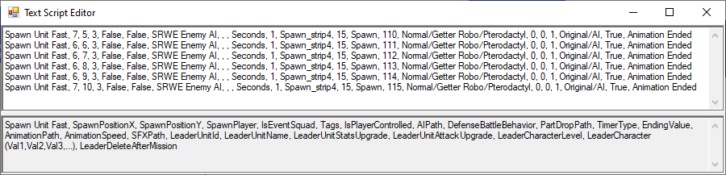 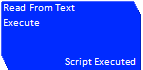
Let’s move on to Visual Novels scripts now. Everything you want is in the Visual Novel tab except for the Start Visual Novel Deathmatch which is under the Deathmatch tab. The deathmatch version will make the camera follow the character talking while the regular one has no interaction.
First you need to create a Visual Novel script that will contain the VN and a unique ID. Then you use a Start Visual Novel with that ID to start the VN.
It has 4 event, Frame Changed will be called any time the player access a new dialog. Pause and Resume will be when the cutscene pause/resume the VN. Visuel Novel Ended is when the player exited the VN, you can add new script to spawn more units, start music, another VN and others.
Visual Novel Cutscene
s
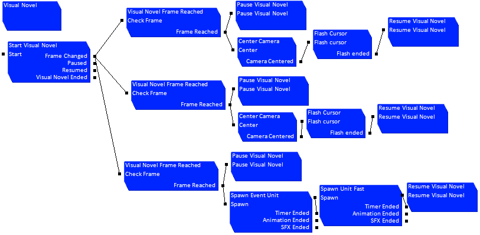
Let’s move on to Visual Novels scripts now. Everything you want is in the Visual Novel tab except for the Start Visual Novel Deathmatch which is under the Deathmatch tab. The deathmatch version will make the camera follow the character talking while the regular one has no interaction.
First you need to create a Visual Novel script that will contain the VN and a unique ID. Then you use a Start Visual Novel with that ID to start the VN.
It has 4 event, Frame Changed will be called any time the player access a new dialog. Pause and Resume will be when the cutscene pause/resume the VN. Visuel Novel Ended is when the player exited the VN, you can add new script to spawn more units, start music, another VN and others.
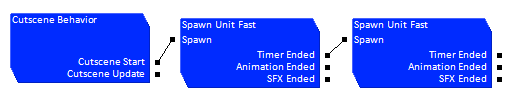
When you want to add actions to your visual novel, you can use the built in cutscene editor but you might run into some issues as those will not block the player actions. Instead you’ll want to use the Pause/Resume Visual Novel to hide it until you’re done with your actions.
You want to link a Visual Novel Frame Reached script to the Frame Changed event of the VN, you’ll need to provide the ID of the VN and the frame you want. After that you can link the Pause Visual Novel script with the VN ID to the Frame Reached event to hide the VN.
You can consider the Frame Reached as a starting point for more scripts, link as many scripts as you want and link them together without worries. Just remember to use the Resume Visual Novel script after you’re down, as well as not forgetting the use the ID. A common mistake is forgetting the Resume script or using the wrong ID which will make the game appear frozen as the Cutscene will be waiting forever for the player to end the VN.
Deathmatch Cutscenes
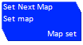 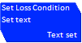 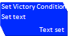 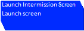
Now that you have a simple map, you need to be able to make set victory conditions and the next map to use. Everything is in the Battle Map tab.
First you have the Set Next Map, just select a map and you’re done. Don’t forget to set it you’ll just end up in the same map you just finished.
Next you’ll want to set the Victory/Defeat text. They only define the text, you’ll need to do the logic yourself in the Map itself.
For the victory condition itself, you just want to bring the player to the intermission menu.